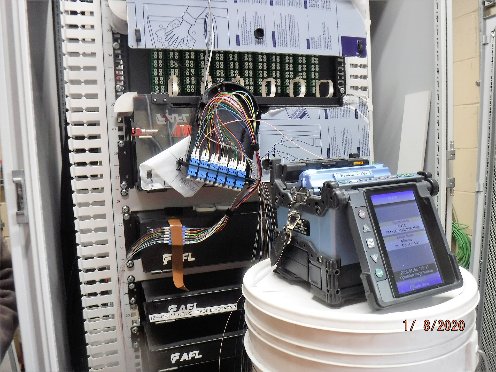

Writing
Each note starts with the problem a tool has to solve, goes through how it is put together, and ends with what is still open. I write them before the code exists, so the reasoning can be argued with while changing it is cheap.
The rules are written in plain language before any of them are code. If a rule cannot be explained in a sentence, it is usually two rules wearing a trench coat.
- Designing k8s-audit 19 October 2026
The systems
Everything here is pointed at infrastructure somebody else is running: clusters, nodes, and the links between them. The tools are small on purpose.


Photos: Moses Cursor Ssebunya (CC0), rawpixel (CC0), MTA Capital Construction (CC BY 2.0), chaitawat (CC0).